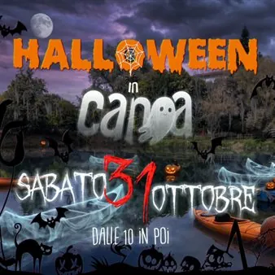

sab 31 ott · dalle 10:00
Halloween al Battirame...in canoa
Evento per bambini, famiglie e adulti PROGRAMMA DELLA GIORNATA Dalle 10:00 alle 12:00: • Kayak e canoa per bambini 6-12 anni nel laghetto San Carlo • Attività fitness, pilates e yoga gratuite per genitori e adulti in palestra • Truccabimbi • Laboratorio creativo a tema Halloween…
 Indicazioni
Indicazioni
- Costi e prenotazioni
- Costo non indicato · Prenotazione non indicata
- Programma
- Programma da verificare. Apri la fonte ufficiale per orari e possibili aggiornamenti.
- In caso di maltempo
- Nessuna indicazione specifica pubblicata.
- Note
- Acquisito automaticamente dalla fonte.
L’EVENTO
Descrizione completa
Evento per bambini, famiglie e adulti
PROGRAMMA DELLA GIORNATA Dalle 10:00 alle 12:00:
• Kayak e canoa per bambini 6-12 anni nel laghetto San Carlo
• Attività fitness, pilates e yoga gratuite per genitori e adulti in palestra
• Truccabimbi
• Laboratorio creativo a tema Halloween
• Gara di puzzle “Ogni pezzo conta” con premi per singolo, coppia e squadra
Dalle 12:00 alle 13:00 – Pranzo:
Un piatto di orzo, fasioi e cotechino
Una bibita a scelta
Presente anche un food truck per chi desidera acquistare altro
Dalle 14:00:
Garetta di kayak per i tesserati che hanno svolto almeno il corso base di kayak con il Canoa Club Naonis. 💰 COSTI Evento bambini : 10€
Include: giro in canoa, laboratorio creativo, truccabimbi, piatto di orzo, fagioli e cotechino, una bibita.
I genitori possono provare gratuitamente le attività sportive del mattino.
Gara di kayak : 10€
Pacco gara: sacca portascarpe Battirame, piatto di orzo, fagioli e cotechino, una bibita.
Possibilità di partecipare alle attività fitness/pilates/yoga gratuite al mattino.
Evento senza prenotazione fino ad esaurimento posti.
In caso di maltempo l’evento sarà annullato.
IL PROGRAMMA
Programma e orari
Appuntamenti raccolti dalle fonti elencate. Dove manca un orario, non è ancora disponibile in questa scheda.
Programma pubblicato
- Dal 2026-10-31 al 2026-10-31
INFORMAZIONI UTILI
Prima di partire
- Controllare la fonte prima di partire.
ORGANIZZAZIONE